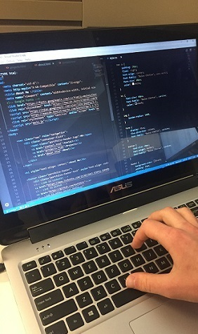

About Me


I started learning how to code in February of 2018 primarily through the Full Stack Flex Web Development Boot Camp provided by Georgia Tech. I have also been learning through friends who work as software developers and online resources including Udemy, Codecademy and W3 Schools. It's been a very difficult and overwhelming experience no doubt but it has shown me that coding is not a talent or a gift that only certain people have but rather it's a skill that requires practice and commitment.